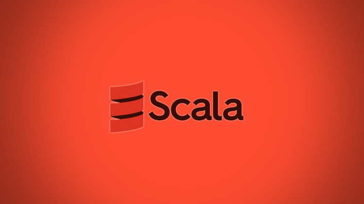

Scala Martin Odersky tarafından 2001 senesinde geliştirilmiş ve resmi olarak da 2004 senesinde yayınlanmış bir programlama dilidir. Java diline benzetilse de kesinlikle onun bir uzantısı olarak görmemek gerekir. Genellikle yazılım geliştirmek için kullanılan birçok programlama dili bulunmaktadır. Hatta birçok ürün geliştirici platform birden çok farklı programlama dilini birlikte kullanır. Scala’da bunlardan biridir diyebiliriz. Son zamanlarda da oldukça dikkat çekmektedir. Scala Java ile birlikte sıklıkla anılmaktadır ancak onunla yapılacak işler Java ile yapılan işlerin aynısının daha az kod satırı ile halledilebileceğini gösteriyor insanlara. Zaten bu tarz dilleri kullanan platformlar birden çok dili aynı anda kullanır özellikle de asla tek bir dilin fanatiği değildirler. Yeni mezun biriyseniz Scala’yı mutlaka bilin diye bir şey yoktur. Genellikle herhangi bir dilin birer araç olmasından bahsedilir. Temel özellikleri ile dilleri keşfederseniz bu size daha iyi bir yazım stili kazandırır.
Java programlama dili bilen insanlar genellikle Scala’yı da öğrenmek ve de kullanmak için tercih eder ve bu dile başvurur. Kütüphaneler genellikle bu dili Java ve Scala’yı yazım konusunda tercih eder. Ocak 2011’de Scala ekibi beş yıllık bir araştırma bursu kazandı, Avrupa Araştırma Konseyi tarafından. Daha sonradan da Mayıs 2011 de Scala için destek, eğitim ve hizmetleri sağlamak için Lightbend A.Ş. şirketi yatırımda bulundu Scala’nın geliştirilmesi için. Genellikle Java dili kullanıcılarının kullandığı bu dili; programlama yaparken ek bir dil olarak kullanmak mümkün. Zaten genel olarak popüler geliştiriciler tarafından geliştirilen Youtube, WhatsApp, Twitter, Facebook, İnstagram, skype gibi uygulamaların geliştiricileri de tavsiye olarak genç yazılımcılara birden fazla programlama dili kullanmayı önermektedir. Onlarında projelerine baktığımızda tüm ekip olarak sadece bir tane programlama dili kullanmaz, daha çok 2 veya daha fazla programlama dilini birlikte kullanırlar.
Scala, hem nesne yönelimli hem de fonksiyonel programlama içerdiği için de bu alanda meşhurdur. Ve kendi derleyicisi olmasına rağmen Java Byte-Code üretebiliyor. Bazen programcılar şunu iyi bilir ki bazen oldukça basit bir iş için bile oldukça fazla kod yazılır ancak benzer şeyleri tekrar tekrar yazmak işleri daha da büyüten bir hal alır. Bu tarz can sıkıcı durumlarda programlama yapmanın en kritik halleridir. Bu tarz durumları yaşamamak ya da üstesinden gelmek için de bu programlama dillerinin geliştirilmesi için neyin gerekli neyin gereksiz olduğunu düşünmek ve uygulamak gerekir. Scala’nın kısa yalın ve öz bir yapısı vardır. Yani Scala’da geliştirme yapmış biri tarafından fark anlaşılabilir Kolaylıkla. Java ile Play Framework daha iyi performansta çalışır ayrıca Scala ile Play Framework.
En çok Java ile kullanılan Scala Amazon’un AWS (Amazon Web Services) isimli bulut (cloud) hizmetleri için hazırlanmış kütüphanelerde karşımıza çıkıyor ve bu kodlar birlikte sorunsuzca kullanılabiliyorlar. Java ile yapılabilecekler gerçekten oldukça fazla ancak eğer bir şekilde Java ile çalışıyorsanız da bu programlama dili olan Scala’yı da öğrenmekte ve kullanımlarınıza ortak etmekte fayda var. Scala ile geliştirmede bulunacaksanız herhangi bir sorunla karşılaşmanız pek olası değil. Scala ile aynı zamanda da yüksek performanslı ve eşzamanlı işler de yapmak yine sizin elinizde. Scala öğrenmek ve de kodlama yapmak içinde önemli bir uygulama dili olması nedeniyle bilinir ve sık sık bu amaç içinde kullanılır yeni mezun üniversite öğrencilerine örnek olarak kullanmaları için tavsiye edilir ancak sadece bunun için değil birçok daha farklı kullanım alanları için geliştiriciler, yazılımcılar, mühendisler ve de programcılar tarafından kullanılmaktadır.
